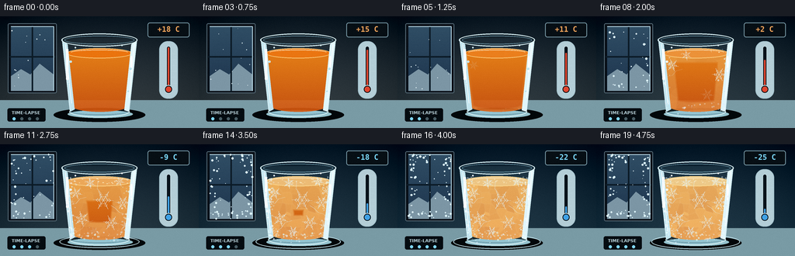
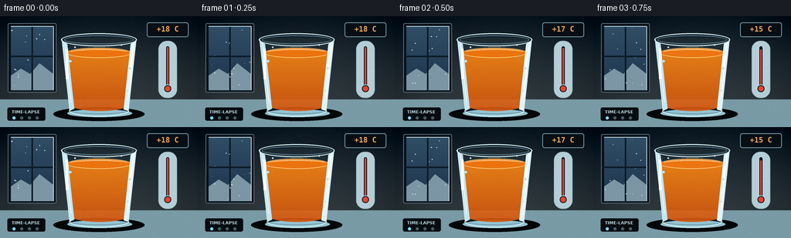

CODING AGENTS AS PIXEL WORLD MODELS
traex/GPT-5.6-Sol · phygen_092
点击播放 · 原生 RGB 像素
逐轮保存的候选
回放视频、检查图与代码变化。
每份候选均可单独播放。实际图片检查记录在下方工具轨迹中。
候选 01播放与检查图
点击播放 · 原生 RGB 像素


展开代码变化
--- 上一保存版本
+++ 本次保存版本
@@ -0,0 +1,371 @@
+from pathlib import Path
+import math
+
+import cv2
+import numpy as np
+from PIL import Image, ImageDraw, ImageFont, ImageFilter
+
+import artifact_io
+
+
+CASE_DIR = Path(__file__).resolve().parent
+W, H, N = 256, 144, 20
+S = 4
+SW, SH = W * S, H * S
+
+
+def sc(v):
+ return int(round(v * S))
+
+
+def box(b):
+ return tuple(sc(v) for v in b)
+
+
+def pts(p):
+ return [(sc(x), sc(y)) for x, y in p]
+
+
+def smoothstep(x):
+ x = np.clip(x, 0.0, 1.0)
+ return x * x * (3.0 - 2.0 * x)
+
+
+FONT = "/usr/share/fonts/truetype/dejavu/DejaVuSans.ttf"
+FONT_BOLD = "/usr/share/fonts/truetype/dejavu/DejaVuSans-Bold.ttf"
+FONT_MONO = "/usr/share/fonts/truetype/dejavu/DejaVuSansMono-Bold.ttf"
+
+
+def font(path, size):
+ return ImageFont.truetype(path, sc(size))
+
+
+# Geometry masks are fixed, which makes the camera and glass perfectly stable.
+outer_mask_img = Image.new("L", (SW, SH), 0)
+om = ImageDraw.Draw(outer_mask_img)
+om.polygon(pts([(79, 28), (177, 28), (166, 124), (90, 124)]), fill=255)
+om.ellipse(box((90, 116, 166, 129)), fill=255)
+outer_mask = np.asarray(outer_mask_img, dtype=np.float32) / 255.0
+
+liquid_mask_img = Image.new("L", (SW, SH), 0)
+lm = ImageDraw.Draw(liquid_mask_img)
+lm.polygon(pts([(86, 47), (170, 47), (163, 117), (94, 117)]), fill=255)
+lm.ellipse(box((94, 109, 163, 123)), fill=255)
+lm.ellipse(box((86, 41, 170, 54)), fill=255)
+liquid_mask = np.asarray(liquid_mask_img, dtype=np.float32) / 255.0
+liquid_binary = (liquid_mask > 0.5).astype(np.uint8)
+inside_distance = cv2.distanceTransform(liquid_binary, cv2.DIST_L2, 5) / S
+
+# A stable crystalline tessellation inside the juice.
+rng_facets = np.random.default_rng(4198)
+seed_xy = np.column_stack((rng_facets.uniform(87, 170, 42), rng_facets.uniform(44, 122, 42)))
+seed_tone = rng_facets.uniform(-17, 20, len(seed_xy))
+yy, xx = np.mgrid[0:SH, 0:SW]
+xo, yo = xx / S, yy / S
+best = np.full((SH, SW), 1e12, np.float32)
+labels = np.zeros((SH, SW), np.int16)
+for k, (sx, sy) in enumerate(seed_xy):
+ dd = (xo - sx) ** 2 + (yo - sy) ** 2
+ take = dd < best
+ labels[take] = k
+ best[take] = dd[take]
+facet_tone = seed_tone[labels]
+edges = np.zeros((SH, SW), np.uint8)
+edges[:, 1:] |= labels[:, 1:] != labels[:, :-1]
+edges[1:, :] |= labels[1:, :] != labels[:-1, :]
+edges = cv2.GaussianBlur(edges.astype(np.float32), (0, 0), sc(0.55))
+edges = np.clip(edges * 1.25, 0, 1)
+
+
+def blend_array(base, layer, alpha):
+ """Blend an RGB numpy layer into base using a scalar or HxW alpha."""
+ a = np.asarray(alpha, np.float32)
+ if a.ndim == 2:
+ a = a[..., None]
+ return base * (1.0 - a) + np.asarray(layer, np.float32) * a
+
+
+def draw_window(im, p, frame_index):
+ d = ImageDraw.Draw(im, "RGBA")
+ # Recess and cold outdoor view.
+ d.rounded_rectangle(box((10, 9, 73, 99)), radius=sc(2), fill=(8, 15, 23, 235), outline=(88, 109, 121, 120), width=sc(1))
+ for y in range(sc(13), sc(96)):
+ t = (y / S - 13) / 83
+ col = (int(48 - 18 * t), int(78 - 25 * t), int(101 - 23 * t), 255)
+ d.line([(sc(14), y), (sc(69), y)], fill=col, width=1)
+ # Distant snow and panes.
+ d.polygon(pts([(14, 77), (27, 68), (39, 75), (51, 61), (69, 75), (69, 96), (14, 96)]), fill=(124, 150, 165, 125))
+ d.line(pts([(41.5, 11), (41.5, 97)]), fill=(12, 27, 39, 210), width=sc(2))
+ d.line(pts([(12, 52), (71, 52)]), fill=(12, 27, 39, 210), width=sc(2))
+ d.line(pts([(14, 13), (69, 13), (69, 96)]), fill=(190, 222, 235, 75), width=sc(1))
+
+ # Frost creeps inward from the window edges as the scene cools.
+ rng = np.random.default_rng(721)
+ for k in range(70):
+ side = k % 4
+ if side == 0:
+ x, y = rng.uniform(14, 24), rng.uniform(14, 95)
+ elif side == 1:
+ x, y = rng.uniform(59, 69), rng.uniform(14, 95)
+ elif side == 2:
+ x, y = rng.uniform(14, 69), rng.uniform(13, 23)
+ else:
+ x, y = rng.uniform(14, 69), rng.uniform(86, 96)
+ onset = rng.uniform(.12, .92)
+ if p > onset:
+ a = int(45 + 105 * min(1, (p - onset) / .2))
+ r = rng.uniform(.45, 1.45)
+ d.ellipse(box((x-r, y-r, x+r, y+r)), fill=(219, 242, 249, a))
+ # A few drifting snow flecks outside, varying by frame.
+ rng = np.random.default_rng(900 + frame_index)
+ for _ in range(13):
+ x, y = rng.uniform(15, 68), rng.uniform(15, 94)
+ r = rng.uniform(.25, .7)
+ d.ellipse(box((x-r, y-r, x+r, y+r)), fill=(228, 243, 248, 110))
+
+
+def draw_thermometer(im, temp, p):
+ d = ImageDraw.Draw(im, "RGBA")
+ # Digital readout makes the large temperature drop explicit.
+ d.rounded_rectangle(box((190, 8, 244, 27)), radius=sc(3), fill=(7, 15, 21, 225), outline=(120, 153, 166, 175), width=sc(1))
+ text = f"{temp:+d} C"
+ f = font(FONT_MONO, 9.5)
+ bb = d.textbbox((0, 0), text, font=f)
+ tw = bb[2] - bb[0]
+ col = (243, 166, 91, 255) if temp > 0 else (125, 218, 255, 255)
+ d.text(((sc(217) - tw / 2), sc(11)), text, font=f, fill=col)
+
+ # Analog thermometer, including a falling fluid column.
+ d.rounded_rectangle(box((205, 32, 229, 106)), radius=sc(11), fill=(180, 206, 215, 25), outline=(165, 195, 205, 125), width=sc(1))
+ d.rounded_rectangle(box((214, 38, 220, 92)), radius=sc(3), fill=(8, 18, 26, 190), outline=(191, 215, 222, 100), width=sc(1))
+ for k in range(7):
+ y = 40 + k * 7.7
+ length = 7 if k % 2 == 0 else 4
+ d.line(pts([(221, y), (221 + length, y)]), fill=(185, 211, 219, 155), width=sc(.55))
+ top = 40 + (18 - temp) / 43.0 * 43
+ fluid = (224, 70, 47, 255) if temp > 1 else (64, 162, 230, 255)
+ d.rounded_rectangle(box((216, top, 218, 94)), radius=sc(1), fill=fluid)
+ d.ellipse(box((211.5, 88.5, 222.5, 99.5)), fill=(10, 18, 25, 230), outline=(189, 215, 222, 130), width=sc(1))
+ d.ellipse(box((213.5, 90.5, 220.5, 97.5)), fill=fluid)
+ d.text((sc(207), sc(108)), "LOW", font=font(FONT_BOLD, 4.8), fill=(146, 180, 194, 175))
+
+
+def draw_snowflake(layer, cx, cy, r, alpha=220, rotation=0.0, width=.55):
+ d = ImageDraw.Draw(layer, "RGBA")
+ col = (229, 248, 255, alpha)
+ for j in range(6):
+ a = rotation + math.pi * j / 3
+ ux, uy = math.cos(a), math.sin(a)
+ x2, y2 = cx + ux * r, cy + uy * r
+ d.line(pts([(cx, cy), (x2, y2)]), fill=col, width=max(1, sc(width)))
+ for frac in (.48, .72):
+ bx, by = cx + ux * r * frac, cy + uy * r * frac
+ for sg in (-1, 1):
+ aa = a + sg * 0.72
+ ex = bx - math.cos(aa) * r * .25
+ ey = by - math.sin(aa) * r * .25
+ d.line(pts([(bx, by), (ex, ey)]), fill=col, width=max(1, sc(width * .8)))
+
+
+def apply_crystals(im, p):
+ # Branching stars appear in a physically readable nucleation sequence.
+ layer = Image.new("RGBA", (SW, SH), (0, 0, 0, 0))
+ flakes = [
+ (98, 63, 8, .10, .20), (158, 75, 9, .18, .02),
+ (116, 50, 7, .24, .42), (143, 101, 10, .31, .12),
+ (105, 96, 10, .37, .33), (133, 72, 13, .44, .04),
+ (154, 48, 7, .50, .23), (121, 112, 7, .58, .14),
+ ]
+ for cx, cy, r, onset, rot in flakes:
+ if p > onset:
+ vis = min(1.0, (p - onset) / .15)
+ draw_snowflake(layer, cx, cy, r * (.75 + .25 * vis), int(210 * vis), rot, .52)
+
+ # A few angular freeze-front fractures.
+ d = ImageDraw.Draw(layer, "RGBA")
+ fractures = [
+ [(89, 78), (98, 76), (103, 70), (111, 68)],
+ [(164, 91), (154, 88), (148, 82), (143, 79)],
+ [(126, 47), (125, 57), (130, 63), (128, 72)],
+ [(97, 114), (106, 108), (111, 101), (120, 98)],
+ ]
+ for q, path in enumerate(fractures):
+ onset = .25 + q * .09
+ if p > onset:
+ d.line(pts(path), fill=(224, 245, 250, int(160 * min(1, (p-onset)/.2))), width=sc(.6), joint="curve")
+
+ # Clip all crystal drawings to the juice itself.
+ a = np.asarray(layer.getchannel("A"), dtype=np.float32) * liquid_mask
+ layer.putalpha(Image.fromarray(np.uint8(np.clip(a, 0, 255))))
+ im.alpha_composite(layer)
+
+
+def draw_glass_details(im, p):
+ d = ImageDraw.Draw(im, "RGBA")
+ # Refraction bands and clear outer edges.
+ d.polygon(pts([(80, 31), (87, 36), (96, 120), (90, 123)]), fill=(196, 230, 240, 24))
+ d.polygon(pts([(176, 31), (169, 36), (160, 121), (166, 123)]), fill=(225, 246, 251, 34))
+ d.line(pts([(80, 30), (90, 122)]), fill=(213, 239, 246, 165), width=sc(1))
+ d.line(pts([(176, 30), (166, 122)]), fill=(213, 239, 246, 150), width=sc(1))
+ d.line(pts([(84, 36), (92, 112)]), fill=(255, 255, 255, 92), width=sc(.7))
+ d.line(pts([(173, 35), (166, 105)]), fill=(255, 255, 255, 70), width=sc(.65))
+ d.ellipse(box((79, 22, 177, 39)), outline=(218, 243, 248, 185), width=sc(1.15))
+ d.ellipse(box((83, 25, 173, 36)), outline=(115, 160, 177, 135), width=sc(.7))
+ d.arc(box((89, 115, 167, 130)), 0, 180, fill=(226, 247, 250, 170), width=sc(1))
+ d.arc(box((91, 118, 165, 127)), 0, 180, fill=(99, 139, 154, 140), width=sc(.65))
+ # Long optical highlights.
+ d.rounded_rectangle(box((85, 42, 88, 82)), radius=sc(1.3), fill=(255, 255, 255, 80))
+ d.rounded_rectangle(box((168, 51, 170, 72)), radius=sc(1), fill=(255, 255, 255, 48))
+
+ # Condensation droplets exist first, then become small frozen beads.
+ drops = [(91, 58, 1.4), (168, 67, 1.7), (88, 86, 1.2), (165, 96, 1.4), (97, 40, 1.0), (157, 37, .9)]
+ for k, (x, y, r) in enumerate(drops):
+ frozen = smoothstep((p - (.17 + k*.025)) / .2)
+ warm_col = np.array([182, 226, 237, 105])
+ cold_col = np.array([235, 250, 255, 220])
+ col = tuple(np.uint8(warm_col * (1-frozen) + cold_col*frozen))
+ d.ellipse(box((x-r, y-r*.8, x+r, y+r*1.3)), fill=col, outline=(255,255,255,110), width=max(1, sc(.35)))
+ d.ellipse(box((x-r*.35, y-r*.5, x+r*.05, y-r*.05)), fill=(255,255,255,150))
+
+
+def draw_frost(im, p):
+ if p <= .05:
+ return
+ layer = Image.new("RGBA", (SW, SH), (0, 0, 0, 0))
+ d = ImageDraw.Draw(layer, "RGBA")
+ rng = np.random.default_rng(1729)
+ # Powdery frost preferentially grows from the base and sidewalls.
+ for k in range(220):
+ mode = rng.choice(3, p=[.35, .35, .30])
+ if mode == 0:
+ x, y = rng.normal(92, 3.2), rng.uniform(42, 119)
+ elif mode == 1:
+ x, y = rng.normal(164, 3.1), rng.uniform(42, 119)
+ else:
+ x, y = rng.uniform(91, 166), rng.normal(118, 4.0)
+ # Bottom particles arrive earlier; all positions remain stable over time.
+ onset = rng.uniform(.16, .94) - (.12 if y > 110 else 0)
+ if p > onset:
+ growth = min(1.0, (p-onset)/.14)
+ r = rng.uniform(.28, 1.25) * (.55 + .45*growth)
+ alpha = int(rng.uniform(65, 185) * growth)
+ col = (218 + rng.integers(0, 25), 239 + rng.integers(0, 16), 246 + rng.integers(0, 10), alpha)
+ d.ellipse(box((x-r, y-r, x+r, y+r)), fill=col)
+ # Recognizable dendrites on the outside of the tumbler.
+ branches = [(94, 111, 5, .33, .1), (161, 105, 6, .42, .3), (92, 74, 4.5, .55, 0), (164, 60, 4, .65, .2)]
+ for cx, cy, r, onset, rot in branches:
+ if p > onset:
+ draw_snowflake(layer, cx, cy, r, int(180*min(1,(p-onset)/.2)), rot, .42)
+ a = np.asarray(layer.getchannel("A"), np.float32) * outer_mask
+ layer.putalpha(Image.fromarray(np.uint8(np.clip(a, 0, 255))))
+ im.alpha_composite(layer)
+
+
+def make_frame(i):
+ t = i / (N - 1)
+ p = smoothstep(np.clip((t - .06) / .90, 0, 1))
+ temp = int(round(18 - 43 * smoothstep(t)))
+
+ # Deep blue-gray environment, subtly cooling over the time-lapse.
+ arr = np.zeros((SH, SW, 3), np.float32)
+ y01 = np.linspace(0, 1, SH)[:, None]
+ top = np.array([17, 29, 39]) * (1-p) + np.array([10, 28, 43]) * p
+ bot = np.array([62, 70, 73]) * (1-p) + np.array([39, 65, 79]) * p
+ arr[:] = top[None, None, :] * (1-y01[..., None]) + bot[None, None, :] * y01[..., None]
+ # Gentle vignette.
+ dx = (xo - 132) / 150
+ dy = (yo - 72) / 100
+ vignette = np.clip((dx*dx + dy*dy) * 19, 0, 22)[..., None]
+ arr -= vignette
+ im = Image.fromarray(np.uint8(np.clip(arr, 0, 255))).convert("RGBA")
+ draw_window(im, p, i)
+ draw_thermometer(im, temp, p)
+
+ # Counter, contact shadow, and a faint glass reflection.
+ d = ImageDraw.Draw(im, "RGBA")
+ d.rectangle(box((0, 108, 256, 144)), fill=(25, 38, 45, 235))
+ for y in range(sc(108), SH):
+ a = int(13 * (1 - (y/S - 108)/36))
+ d.line([(0, y), (SW, y)], fill=(121, 155, 165, max(0, a)), width=1)
+ d.line(pts([(0, 108), (256, 108)]), fill=(117, 147, 157, 50), width=sc(.6))
+ d.ellipse(box((69, 118, 187, 136)), fill=(2, 7, 10, 118))
+ d.ellipse(box((87, 121, 171, 131)), fill=(149, 195, 206, int(16 + 28*p)))
+ # Growing frost halo on the counter at very low temperature.
+ if p > .5:
+ q = (p-.5)/.5
+ d.ellipse(box((78-7*q, 118-2*q, 178+7*q, 133+2*q)), outline=(197, 230, 239, int(70*q)), width=sc(1.1))
+
+ # Tint the transparent tumbler body before adding juice.
+ glass_tint = np.zeros((SH, SW, 4), np.uint8)
+ glass_tint[..., :3] = (145, 198, 214)
+ glass_tint[..., 3] = np.uint8(outer_mask * (12 + 15*p))
+ im.alpha_composite(Image.fromarray(glass_tint, "RGBA"))
+
+ # Juice: rich translucent orange becomes pale, opaque, faceted frozen juice.
+ base = np.asarray(im.convert("RGB"), np.float32)
+ grad = np.clip((yo - 42) / 82, 0, 1)
+ liquid_rgb = np.empty_like(base)
+ liquid_rgb[..., 0] = 249 - 38*grad
+ liquid_rgb[..., 1] = 137 - 54*grad
+ liquid_rgb[..., 2] = 20 - 8*grad
+ # Slight translucency preserves the glass-like feel of juice.
+ base = blend_array(base, liquid_rgb, liquid_mask * .91)
+
+ freeze_depth = max(0.0, p * 39.0 - 1.2)
+ boundary_ice = np.clip((freeze_depth - inside_distance) / 2.6 + .52, 0, 1)
+ top_front = np.clip(((43 + p*51) - yo) / 3.0, 0, 1) * liquid_mask
+ frozen = np.maximum(boundary_ice, top_front) * liquid_mask
+ frozen *= (.18 + .82*p)
+ frozen_rgb = np.empty_like(base)
+ frozen_rgb[..., 0] = 235 + facet_tone*.44
+ frozen_rgb[..., 1] = 180 + facet_tone*.72 - 13*grad
+ frozen_rgb[..., 2] = 102 + facet_tone*.52 - 12*grad
+ # Bright polygon boundaries imitate trapped ice-crystal interfaces.
+ frozen_rgb = frozen_rgb * (1-edges[..., None]*.30) + np.array([245, 225, 184]) * edges[..., None]*.30
+ base = blend_array(base, frozen_rgb, np.clip(frozen*.94, 0, .96))
+ im = Image.fromarray(np.uint8(np.clip(base, 0, 255))).convert("RGBA")
+
+ # Liquid/frozen top surface and a small warm-liquid glint that disappears.
+ d = ImageDraw.Draw(im, "RGBA")
+ surf = np.array([235, 116, 14, 240])*(1-p) + np.array([238, 202, 137, 250])*p
+ d.ellipse(box((86, 41, 170, 54)), fill=tuple(np.uint8(surf)), outline=(255, 220, 146, int(100+90*p)), width=sc(.65))
+ d.arc(box((91, 43, 165, 50)), 188, 350, fill=(255, 240, 202, int(105*(1-p)+155)), width=sc(.7))
+ if p > .18:
+ # Rough crystalline islands spread across the formerly smooth surface.
+ rng = np.random.default_rng(333)
+ for k in range(38):
+ onset = rng.uniform(.18, .92)
+ if p > onset:
+ x = rng.uniform(91,165); y = rng.uniform(44,51); r = rng.uniform(.35,1.2)
+ d.polygon(pts([(x-r,y), (x,y-r*.7), (x+r,y), (x,y+r*.55)]), fill=(248,225,178,int(65+100*min(1,(p-onset)/.15))))
+
+ apply_crystals(im, p)
+ draw_glass_details(im, p)
+ draw_frost(im, p)
+
+ # A restrained time-lapse marker, separate from the physical scene.
+ d = ImageDraw.Draw(im, "RGBA")
+ d.rounded_rectangle(box((9, 118, 59, 136)), radius=sc(3), fill=(5, 12, 17, 165), outline=(118, 151, 162, 75), width=sc(.6))
+ d.text((sc(15), sc(121)), "TIME-LAPSE", font=font(FONT_BOLD, 5.4), fill=(186, 211, 219, 205))
+ for k in range(4):
+ x = 16 + k*10
+ col = (128, 214, 244, 230) if k <= int(t*4) else (73, 93, 101, 160)
+ d.ellipse(box((x, 130, x+4, 134)), fill=col)
+
+ # Downsample for polished antialiasing and add very subtle sensor grain.
+ rgb = im.convert("RGB").resize((W, H), Image.Resampling.LANCZOS)
+ out = np.asarray(rgb, np.int16)
+ rng = np.random.default_rng(12000 + i)
+ noise = rng.normal(0, .65, out.shape[:2])[..., None]
+ out = np.clip(out + noise, 0, 255).astype(np.uint8)
+ return out
+
+
+def main():
+ frames = np.stack([make_frame(i) for i in range(N)], axis=0)
+ artifact_io.save(frames, CASE_DIR)
+ print("saved", frames.shape, frames.dtype, "to", CASE_DIR)
+
+
+if __name__ == "__main__":
+ main()
可观测工具轨迹
实际执行的命令与返回图片。
命令 1exit 0
/bin/bash -lc "cat prompt.txt && printf '\\n--- GENERATION_RULES.md ---\\n' && cat GENERATION_RULES.md && printf '\\n--- task_spec.json ---\\n' && cat task_spec.json"
命令 2exit 0
/bin/bash -lc "find . -maxdepth 3 -type f -printf '%p\\n' | sort | sed -n '1,240p'"
命令 3exit 0
/bin/bash -lc "command -v ffmpeg; command -v python3; python3 - <<'PY' mods=['PIL','cv2','numpy','imageio','matplotlib','cairo','skimage'] for m in mods: try: x=__import__(m); print(m,'OK',getattr(x,'__version__','')) except Exception as e: print(m,'NO',e) PY"
命令 4exit 0
/bin/bash -lc "sed -n '1,260p' artifact_io.py"
命令 5exit 0
/bin/bash -lc 'python3 generate.py'
命令 6exit 0
/bin/bash -lc "python3 - <<'PY'
from pathlib import Path
import numpy as np
from PIL import Image
p=Path('.')
z=np.load('pixels.npz')['pixels']
print('pixels', z.shape, z.dtype, 'range', int(z.min()), int(z.max()))
ims=np.stack([np.asarray(Image.open(f'frames/{i:02d}.png')) for i in range(20)])
print('frames',ims.shape,ims.dtype,'RGB all',all(Image.open(f'frames/{i:02d}.png').mode=='RGB' for i in range(20)))
mad=np.abs(np.diff(ims.astype(np.int16),axis=0)).mean(axis=(1,2,3))
print('adjacent MAD',np.round(mad,2).tolist())
print('artifacts')
for x in ['pixels.npz','index.html','inspection.png','transition_check.png','generate.py']:
q=p/x; print(x,q.stat().st_size)
PY"命令 7exit 0
/bin/bash -lc 'git status --short 2>/dev/null || true; find frames -maxdepth 1 -type f | wc -l'
视觉工具实际返回图片 1

保存候选 1 份；完成命令 7 次；可验证图片返回 1 张。原始 API 响应与完整日志保留在本地。